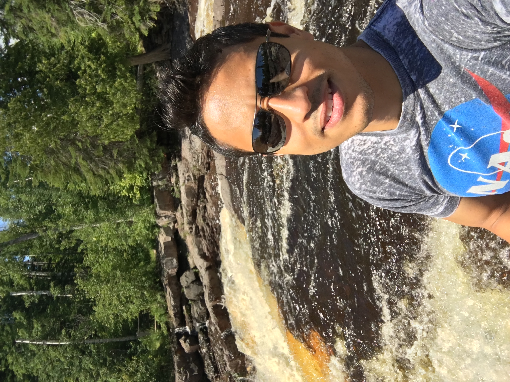

About Me
I'm a Digital Operations Senior Manager for GE Digital. I enjoy the responsibility of leading a team of subject matter experts to a set of objectives established by senior leadership. I have worked in the end user space since 2001 working in different disciplines in IT to include network, server, GPOs, event support. I'm hoping to learn coding to automate some of our processes.
I'm orignially from Puerto Rico but moved around to different countries as my father was in the military. Outside of work I love to travel, play golf, car racing and run.